大家好，我是蒋云何。9月底到10月初对我来说是一个非常梦幻的时间段。因为我终于赚到了心心念念的美刀了。下面是我中秋上站以来的数据（非净利），比起月入万刀的大佬，我还有很多差距。但是对于新手来说，我感觉打开了一个新世界。原来我也是可以赚到美刀的。
最开始有正反馈的那两天，我感觉日子过得非常漫长，也收获了很多，但知道自己还存在很多不足。这篇文章想给那些还处在迷茫中的新手们一些我的看法。
我是在上班之余做副业出海的，节奏也比较慢。从2026年1月加入哥飞社群以来，很长时间都没有正反馈，上的站也不是特别多，也就那么几个。所以，如果你还没有出单，或者因为其他事情耽搁了出海进度，那种感觉我是有很深体会的。
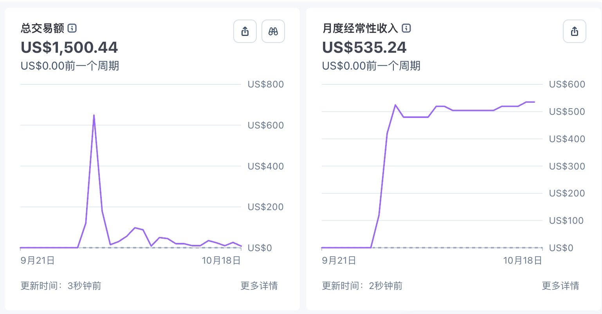
Stripe 后台（9/21–10/18）：总交易额 US$1,500.44，月度经常性收入（MRR）US$535.24
现在身边很多人做生意，在软件领域这块，要么就是小程序、APP，但很少有人涉足出海领域。因为产品开发源于需求，我们国内接触到的主要是国内用户的需求，所以通常是为他们开发软件。这个动作发生得非常自然。
哥飞老师在推特上最近发了一条帖子，讲的是：中国人也能够通过 Web 出海和欧美程序员去竞争，也能过上和他们一样的生活。所以说，对于很多还没有做出海这一块的人来说，这篇文章也算可以抛砖引玉了。
我没有许多万刀大佬的丰富经验，但是我可以从小白新手的角度，谈谈大家在新手期如何实现从 0 到 1 的首单突破，以及 Web 出海到底是怎么回事。
首先讲一下这个需求的来源。
既然我们是做出海业务，面向的客户是全球用户，而不仅仅是国内或某一个国家。那么，当全球用户有需求时，他们的入口会在哪里呢？过去是搜索引擎，大家有什么事情都会去网上搜；现在也有了 ChatGPT 等 AI 搜索工具，大家也会去 AI 里搜。不过，由于使用习惯，很多人还是会去谷歌搜索。所以，我们要做的事，一个是 SEO（搜索引擎优化），一个是 GEO（生成式引擎优化），主要就是这两大块。
我们不太容易知道用户在 AI 中具体问了什么，但可以了解用户在搜索引擎里搜什么。谷歌就提供了这样的工具，叫 Google Trends（谷歌趋势）：
https://trends.google.com/trends/explore
。
当你输入查询词 AI 时，谷歌会显示搜索量上升的「相关查询」，例如“coloros 17 ai capabilities”。这里说的 AI 就是我们的词根，通过它可以了解 AI 这一类需求里，最近有哪些比较火。
这种就算是新词了。
新手做新词，更容易在短期内拿到正反馈。
老词由于竞争比较激烈，很难在短期内看到结果。
但老手有一些经验，懂得持续投入资源，即便短期没有正反馈，也会继续做下去。老词一旦做起来，就有机会持续带来比较稳定的收入。
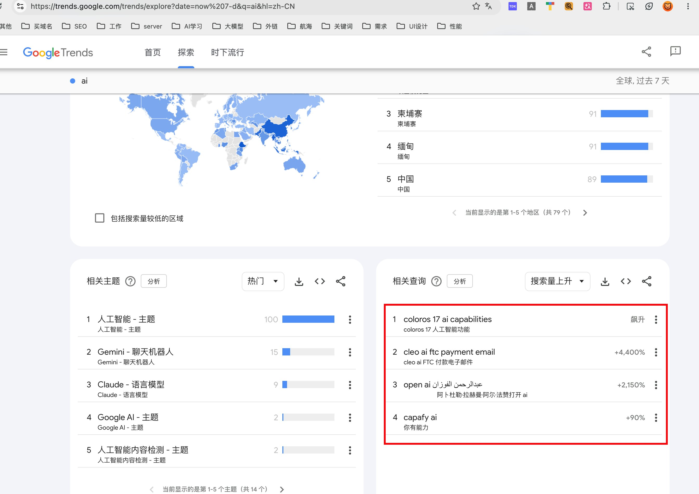
这里推荐 TrendsBar 这个插件，可以很方便地查看这个词的搜索热度，以及有哪些相关域名已经被注册了。
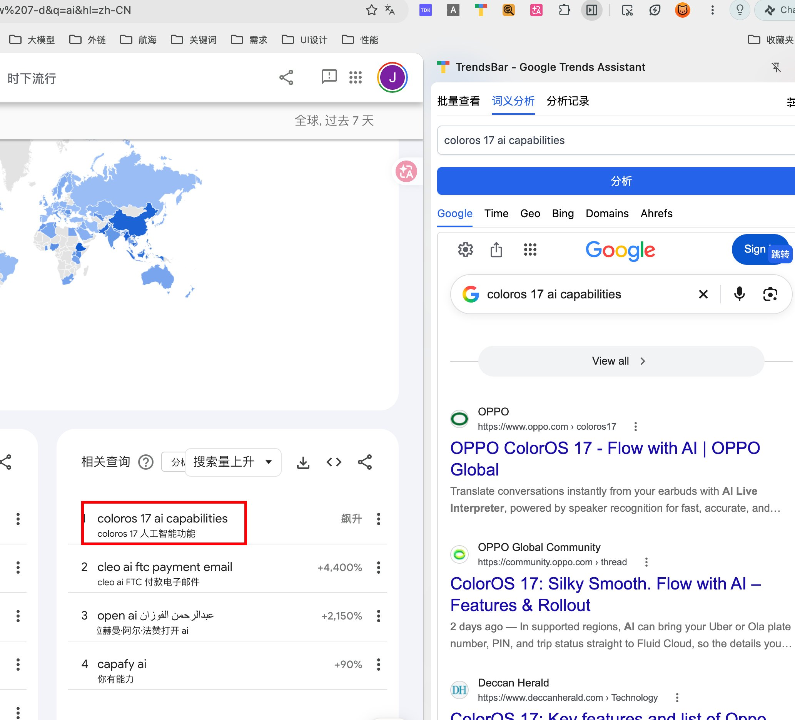
于是我们暂且知道了目前有哪些相关的网站在为用户提供服务，可以模仿借鉴。如果这个时候并没有很多人去做，那么恭喜你，你有很大的优势！
找需求是非常关键的，同时也是非常耗时的。影响结果的关键因素之一，就是需求。选择大于努力。如果需求没确定好，那么付出再多的努力都有可能得不到结果。
以下是我整个过程的时间线。从图中可以看出，新词的正反馈还是来得比较快的，时间就那么几天。因为这个时候能满足需求的网站还不是很多，所以我们就更有机会排到谷歌搜索页的前面，获取点击，让用户进来使用我们的网站。
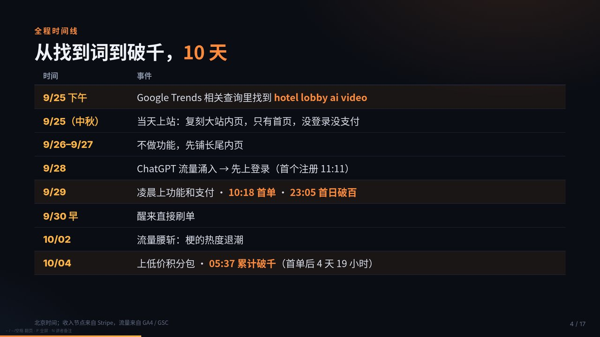
10 天时间线
- 9/25 下午 ：在 Google Trends 相关查询里找到 hotel lobby ai video
- 9/25（中秋） ：当天上站，复刻大站内页，只有首页，没登录没支付
- 9/26–9/27 ：不做功能，先铺长尾内页
- 9/28 ：ChatGPT 流量涌入，先上登录（首个注册 11:11）
- 9/29 ：凌晨上功能和支付，10:18 首单，23:05 首日破百
- 9/30 早 ：醒来直接刷单
- 10/02 ：流量腰斩，梗的热度退潮
- 10/04 ：上低价积分包，05:37 累计破千
找新词：只用一个简单高频的方法
不用对专业词汇和庞大的知识体系犯怵。挑一个简单、高频的方法当切入点，直接上手干，其他方法（让页面被谷歌收录、让 AI 推荐）在干的过程中再补。
我的方法就是 Google Trends 的词根法：9 月 25 日下午四点，在 Trends 里搜词根，看「相关查询」，切到「搜索量上升」，看到了
hotel lobby ai video
。
判断值不值得马上做，我看四点：
- 在飙升 ：出现在「搜索量上升」里。
- 对比 GPTs 热度 ：用 TrendsBar 对比，9 月中旬开始抬头，22 日之后几乎直线往上，已经和 GPTs 差不多高，当天就决定做。
- 结果页没被专门站占住 ：谷歌前排是 YouTube 教程、资讯和 Reddit，然后才是大站内页。
- 域名能买 ：.com 已被注册，我立刻注册了 .app。买域名我用的是 Spaceship 。
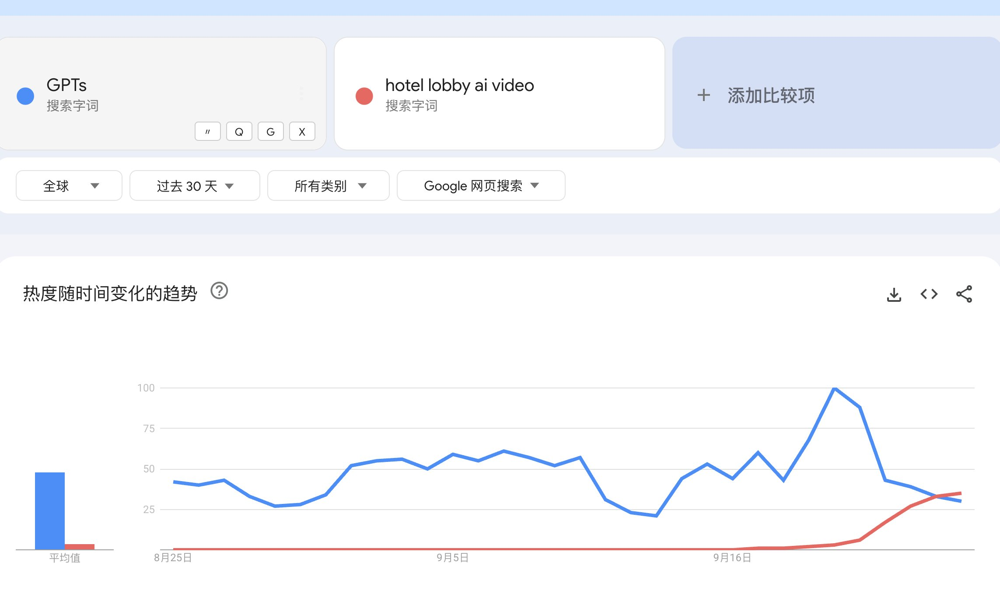
TrendsBar：hotel lobby ai video（红）对比 GPTs（蓝），过去 30 天
当时我连 hotel lobby 是什么意思都不知道，就让 AI 帮我分析才知道这个词的意思，知道背后的需求是什么。
词根这件事，哥飞老师说「新手找新词，老手做难而正确的事」；droidHZ 老师也提过，要沉淀自己的词根，一个词根代表一类需求。我在 TrendsBar 里除了哥飞老师提供的几十个词根，还加了自己关注的词根。
建站：当天上首页，第二天铺长尾内页
上站一定要用现成的 AI 模板，
我用的是 ShipAny 模板
。我们追求的就是速度，如果不用模板，上站可能会非常慢。所以，为了节省时间和精力，
大家不要去省那点钱。
上站这块，我目前用的是
Cloudflare 全家桶
，包括数据库、存储等。这几个模板目前都用 Cloudflare 上站。对于独立开发者来说，这种方式成本很低，也不需要单独购买服务器。
第一天：复刻大站内页 + 假生成效果
谷歌搜下来，很多大站都上了这个内页，我找了一个直接复刻，登录、支付都没上，先把首页上线。中秋这几天，我基本是一边玩一边远程 vibe coding。
还有个细节是跟那个 .com 竞品学的：它只有页面，没有登录支付，但做了一个假的生成效果，能点生成、有加载动画。我觉得这能增加停留时长，也做了。小白就靠模仿：竞品的页面设计、文案、FAQ 写法、定价套餐，都可以先学过来。
第二天：用长尾词铺内页
9 月 26 日下午，我没去做功能，而是上更多内页，承接长尾需求。词从四个地方来：
- 谷歌下拉框
- GSC 的热门查询
- SimilarWeb 关键词生成器：以主词为种子词，拉出 341 个相关词
- 竞品获取自然流量的关键词：比如竞品大站 mitte.ai，光 hotel lobby ai 一个词就有 1.84 万次点击
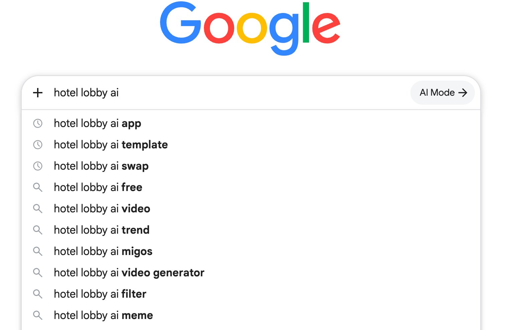
Google 下拉：hotel lobby ai app / template / swap / free / video …
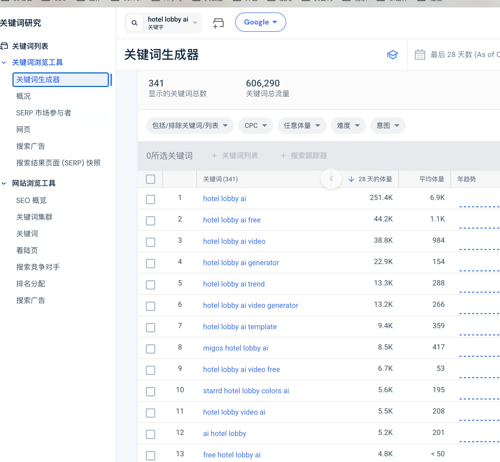
SimilarWeb 关键词生成器：种子词 hotel lobby ai，共 341 个相关词
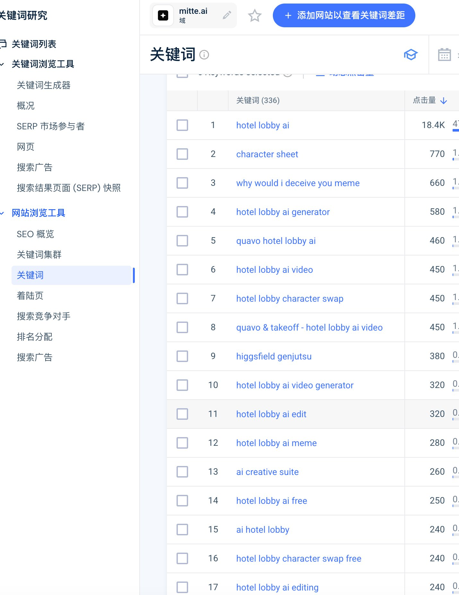
SimilarWeb：竞品大站 mitte.ai 的关键词，hotel lobby ai 一个词 18.4K 点击
把这些词交给 AI 批量上内页。9 月 27 日中午，GSC 24 小时点击到了 42，展示 278，平均排名 8.8。拉长看，9/25–10/15 GSC 一共 695 次点击、5,779 次展示。
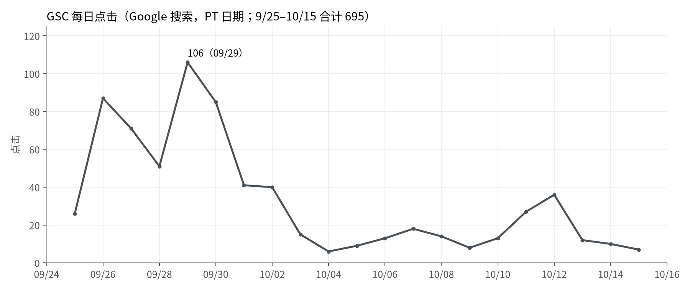
GSC 每日点击（太平洋时间日期）：9/25–10/15 合计 695
还有个意外：点击最多的词不是主词，而是
hotel lobby app
，118 次点击，平均排名 2.6，正好对上我被迫选的 .app 域名；主词 hotel lobby ai 平均排名只有 17.9。
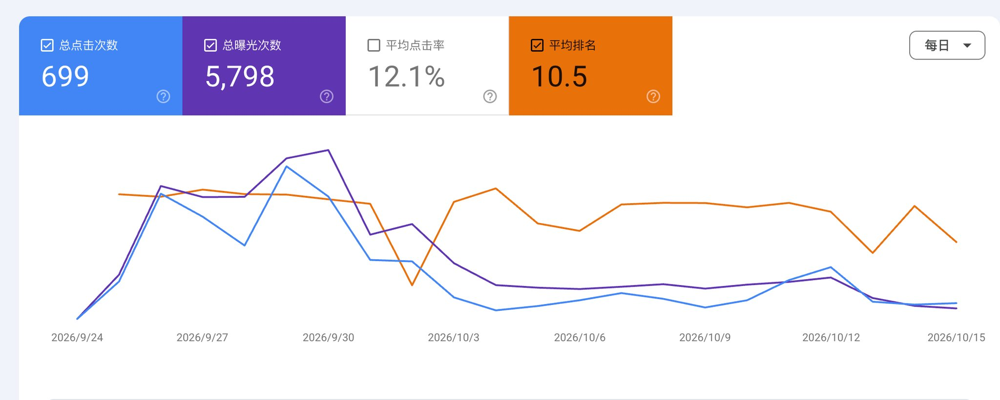
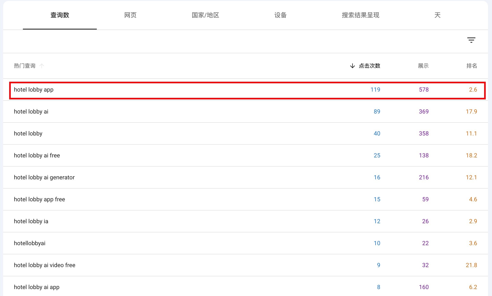
外链也发了，用 Chrome 插件 Auto Register Filler，也买了付费导航站，但只是辅助，主要流量还是靠文案和内容。
ChatGPT 流量与 GEO
9 月 28 日早上打开统计，ChatGPT 来了很多流量。
- 当天 GA4 日活 213，是整个周期最高的一天，其中 chatgpt.com 带来 129 个会话。
- 9/25–10/15，GA4 新用户 1,182 人，其中美国 530 人；来源里 direct 515、chatgpt.com 476、Google 自然搜索 347。AI 带来的流量比 Google 自然搜索还多。
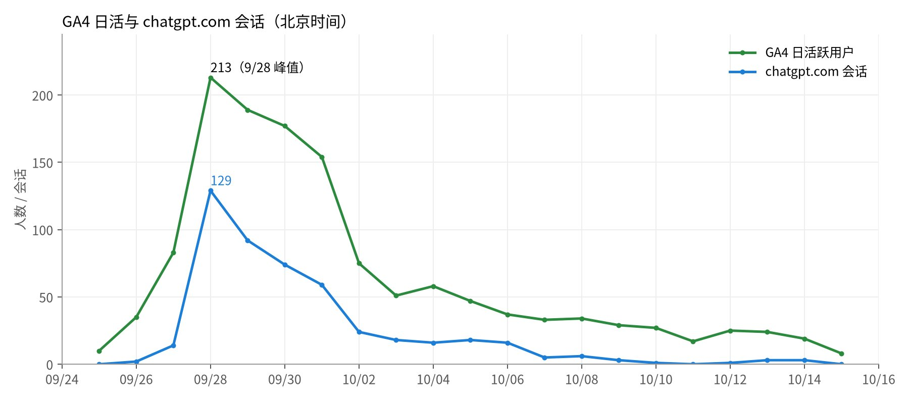
GA4 日活跃用户与 chatgpt.com 会话（北京时间）：9/28 日活峰值 213，chatgpt.com 129
为什么 ChatGPT 会推荐我？我认为这是 AI 时代的新红利：
GEO，让 AI 推荐我们
。用户去问 AI 一个刚爆的新梗，AI 可能还不了解这个新梗，会通过联网搜索找资料；这时网上还没多少页面，我上得快，它就更有机会引用我的站。以前 SEO 那一套，本质上也是在帮 AI 回答用户的问题。
我具体做了三件事：
- 文案和 FAQ 按用户可能会问的问题来写 ，先内容、后功能（FAQ 写法先模仿竞品）。
- 用长尾内页覆盖各种关键词 ，用户问什么，都有页面能回答。
- 上线早 ：登录是 9 月 28 日才上的，在那之前 9/25–9/27，GA4 日活已经是 10 → 35 → 83。
所以我一直觉得前端流量优先：功能做得再好，流量没来，一切都没用。但 GEO 红利在竞争少的前几天最明显：10 月 2 日之后，chatgpt.com 的会话掉了 85%，是所有来源里掉得最多的。
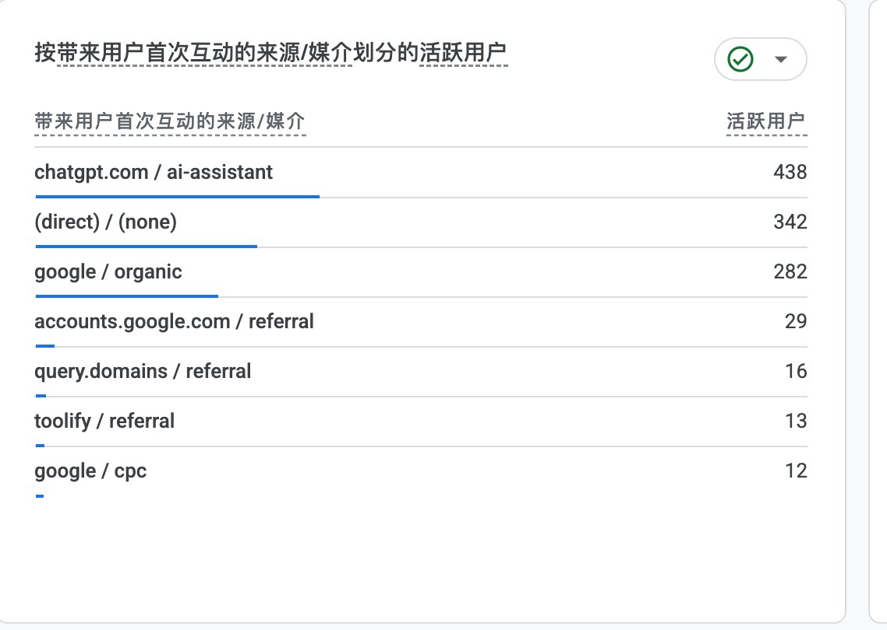
从注册到付费
看到这么多流量，我的第一反应是想看看都是什么用户，所以先上了登录。9 月 28 日 11:11 有了第一个注册，当天 26 个注册，其中 15 个来自 chatgpt.com。我当时给朋友发：「四个 gpt 来的用户」「先把登录上了，下午赶紧把功能、支付上了」。
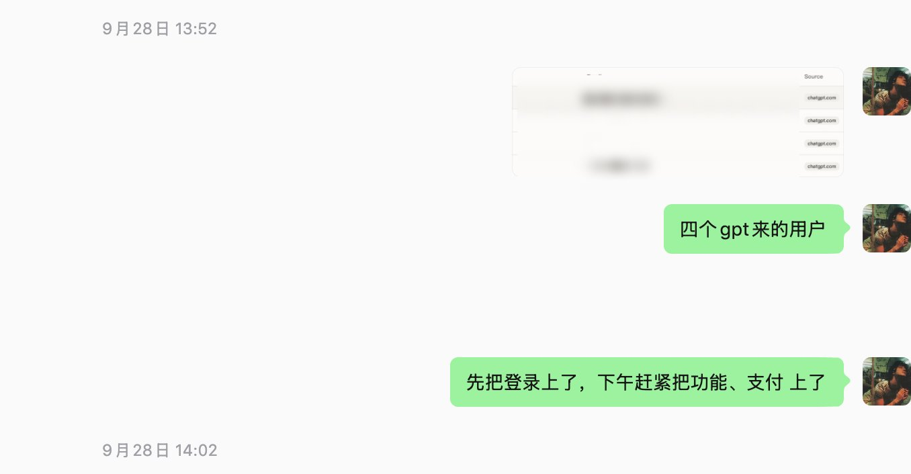
9/28 13:52 微信：四个 gpt 来的用户
截至 10 月 16 日，后台数据：注册 768 人，生成过视频 210 人，付费 64 人，整体转化 8.3%。生成任务一共 313 个，成功 282 个，至少成功出片一次的有 200 人。付费的 64 人里，订阅 38 人、积分包 27 人（1 人两样都买）。
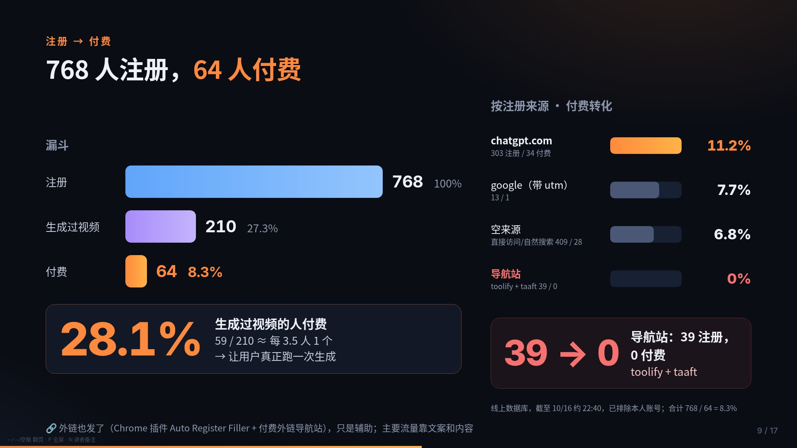
768 人注册，64 人付费：漏斗与注册来源转化
最值得看的是两个数：
- 生成过视频的 210 人里有 59 人付费，28.1% ，差不多每 3.5 人就有 1 人。让用户真正跑一次生成，非常关键。
- chatgpt.com 来的 303 个注册里 34 人付费，11.2%，全站最高 ；没带来源的 409 人转化 6.8%；toolify、taaft 两个导航站带来 39 个注册，0 个付费。
定价：为什么 MRR 能过 500 刀
截至 10 月 18 日，MRR 是 535.24 美元。说实话，这是新手瞎猫碰上死耗子，运气好：我没上低价的一次性积分包，而是直接推订阅。
- 一次性积分包 ：99 美元起
- 月付 ：主推，限时促销，倒计时 7 天、降价 50%，Stripe 上实际是 14.95 美元/月
两个一对比，月付显得很便宜，用户基本都选了订阅，14.95 美元的月付一共 31 笔。现在竞争多了，大家都推一次性付费，用户也确实偏向一次性付费；我的站因为当时竞争少，很多用户订阅了。
我觉得这 500 刀的 MRR 比破千刀更有价值。但后面用户可能会取消订阅，也可能退款，这一点还要继续观察。
首单 → 首日破百 → 破千
9 月 28 日看到 GPT 来的用户之后，我想赶紧把功能和支付上了。上支付要考虑的细节很多：模型、供应商、定价。我先把功能调通，套餐和积分直接照抄一个竞品站。晚上一边看后台每小时都有人注册，一边优化，最后用 codex 设了一个 goal 让它跑着。
关于如何寻找模型，这里提供一份
Artificial Analysis 榜单
，可以根据
成本和分数
来选择想要的模型。
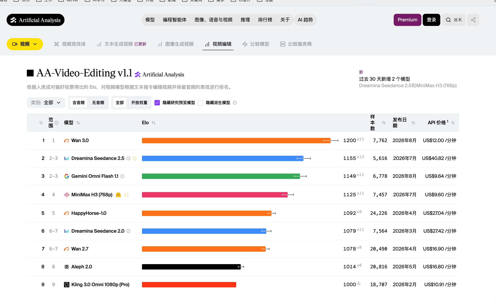
Artificial Analysis 视频编辑模型榜单（截图）
- 9/29 早上 ：好几个用户创建了订单，但一个付款都没有。我怀疑是套餐文案没把价值体现出来，就去改文案。
- 9/29 10:18 ：首单，14.95 美元月订阅。
- 9/29 23:05 ：第 7 笔进来，累计 104.65 美元，距首单 12 小时 47 分，首日破百。全天 8 笔、119.6 美元。
- 9/30 早上 ：一醒来，锁屏一串 Stripe 通知。
- 10/04 05:37 ：之后流量少了很多，但陆续还有单，累计总交易额破千，距首单 4 天 19 小时。
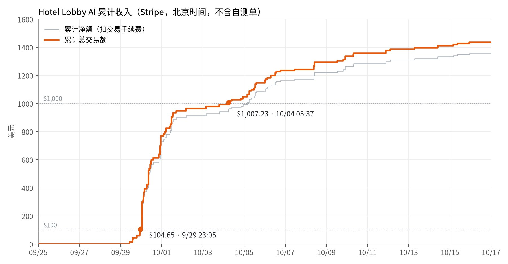
Hotel Lobby AI 累计收入（Stripe，北京时间，不含自测单）：橙线为总交易额，灰线为扣交易手续费后的净额
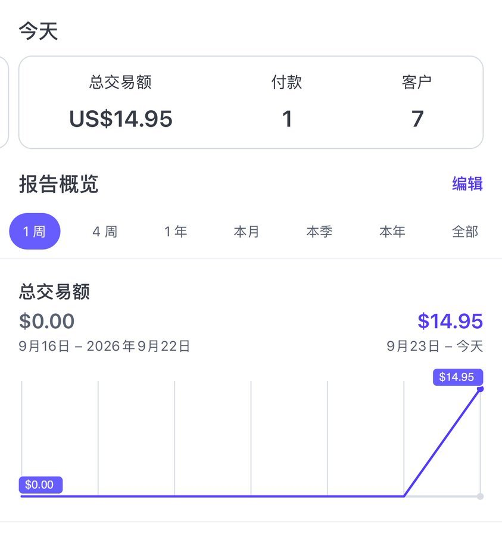
Stripe：9/29 首单，今天总交易额 US$14.95，付款 1
心路历程：用当时的 X 帖说话
这一段我不加事后的形容词，只把当时发的帖子按时间放出来。起点是大半年 0 收入、没有正反馈，我只能每天往前推进一点点。
9 27 中午：上站一两天，42 个点击
X 帖（9/27 12:53）：出海小白上站一两天，获得 42 个点击
这时只有落地页，没有支付、功能和登录。帖子里写的是：「虽然不多，但是对于出海小白来说真的非常有正反馈了！」我也在帖子里记了方法：TrendsBar 插件，哥飞老师给的词根，加上自己关注的词根。
9 28 早上：ChatGPT 来了很多流量
X 帖（9/28 早）：卧槽！今天一大早看 chatgpt 来了好多流量！
截图里，凌晨 4 点这一小时有 35 个访客；来源里 chatgpt.com 72、Direct 37、Google 28。这天我上了登录，晚上干到凌晨 4 点接支付。
9 29 上午：有订单没付款，然后出了首单
X 帖（9/29）：卧槽卧槽！出海人生第一笔首单！
早上「好消息是好几个用户创建了订单，坏消息是一个付款都没有😂」；改了套餐文案后，10:18 出了首单。这条帖子把前几天的过程都写下来了：中秋在江景房的酒店休息时上站，在江上划桨板的时候，还用 uu 远程语音输入 vibe coding 了一下，然后回来上班，再把支付功能上了，就出单了。
9 29 晚上：首日破百
X 帖（9/29 夜）：出海小白破首单，首日破百刀！！！（Stripe 今天 $104.65 / 7 笔）
第 7 笔进来，累计 104.65 美元。那天好多大 V 和朋友关注、评论、转发，我写的是「真是受宠若惊」。帖子最后一句是：「出海真的给人的反馈太强了，在 AI 时代，每一个个体都能在全球化市场里，通过努力创造自己的一片小小的天地。」
9 30 早上：锁屏一串收款通知
X 帖（9/30 早）：一早上直接刷单了
最大的坑：没留住用户，也没让用户帮我放大
10 月 2 日开始流量腰斩。我第一反应是 SEO 出问题了，请哥飞的 SEO agent 帮我分析，结论是：梗的热度自然消退，不是 SEO 的问题。数据也对得上：
- 日均会话从 159 掉到 50，少了 69%
- chatgpt.com 掉得最狠，少了 85%
- Google Trends 从 9 月 26 日的 100，掉到 10 月 2 日的 32、10 月 15 日的 6
- GSC 日均展示从 518 掉到 154，少了 70%；但排名一直稳定在 7–11 名，排名没掉，是搜的人少了
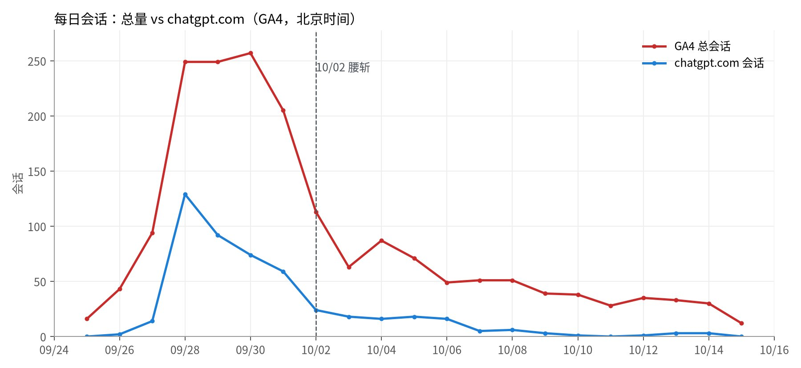
GA4 每日会话：总量 vs chatgpt.com；虚线为 10/02 腰斩
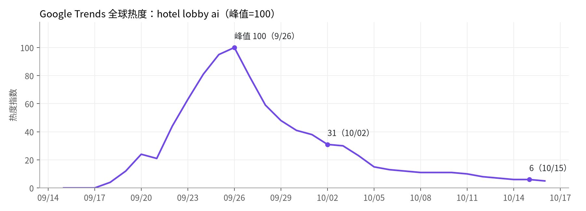
Google Trends 全球热度（hotel lobby ai，峰值 = 100）
这次梗站的红利期大概只有一周：9 月 23 日 Quavo 转发，3 天到顶，1 周腰斩。
但真正的坑在于，我的站
生成完就结束了
，用户来一次就走。哥飞给我看了一个页面示例：有 Feed 可以一直刷别人的作品，有分享按钮，还有一个「Put me in it」，看完就想把自己也放进去。能刷内容、能分享，才能留住用户，让用户帮你放大。
这是我新手期的不足：用户进来的时候，就要想怎么留住他们、怎么让他们愿意分享。
一个调整（不算坑）：10 月 4 日上低价积分包
流量下滑后，10 月 4 日我上了低价积分包，5.99、7.99 美元起，并把付费墙默认改成积分包。新词的用户很多只想玩一次，不想订阅，但愿意付一次钱。上线第二天收入 97.92 美元；10 月 4 日起，新付费用户的第一单基本都是积分包；到现在积分包 27 人、37 笔，约 389 美元。
退款、埋点与用户行为数据
两笔年付退款
一笔 180 美元、一笔 50 美元，合计 230 美元。Stripe 对这两笔给出了早期欺诈预警（EFW），我就主动退款，降低后续产生争议、影响账号的风险。年付大单要单独看，不能算成稳定收入。
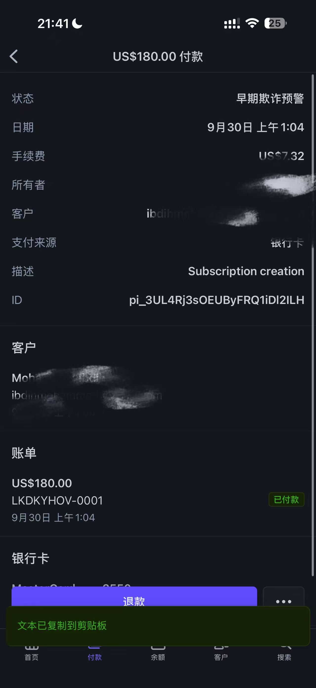
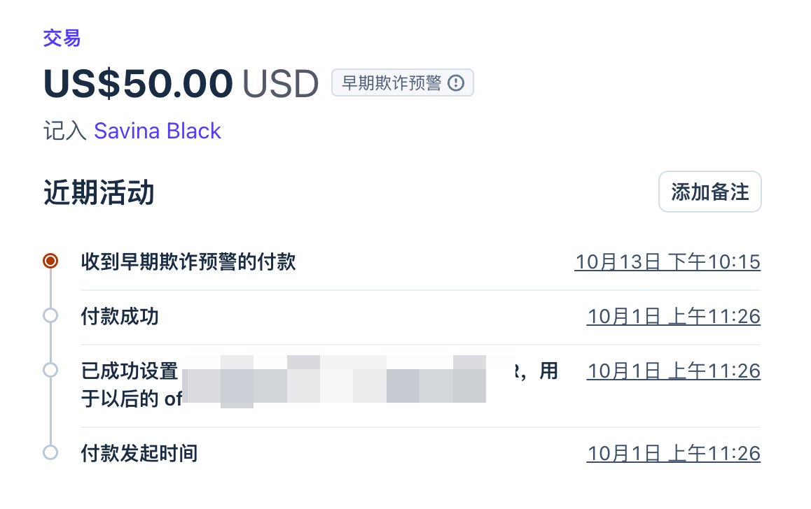
埋点不全
GA4 里 sign_up 只记到 11 次，后台实际有 768 个注册；GA4 的购买事件只有个位数，Stripe 实际成功付款 81 笔。转化率只能去后台查。上支付的时候，一定要把埋点一起做好。另外还有 25 笔失败付款（付款被拒 20 笔、Radar 拦截 5 笔，含同一用户的重复尝试），也值得优化。
用户不会说话，但行为数据会
我接了 Clarity 录屏、Plausible 统计和 Crisp 客服：录屏看用户在哪卡住，统计看流量从哪来，客服让用户能直接找到我，然后及时调整。比如有订单没付款，就改套餐文案；流量下滑，就补积分包。
给新手的清单
上站 SOP：这 10 天按天拆开
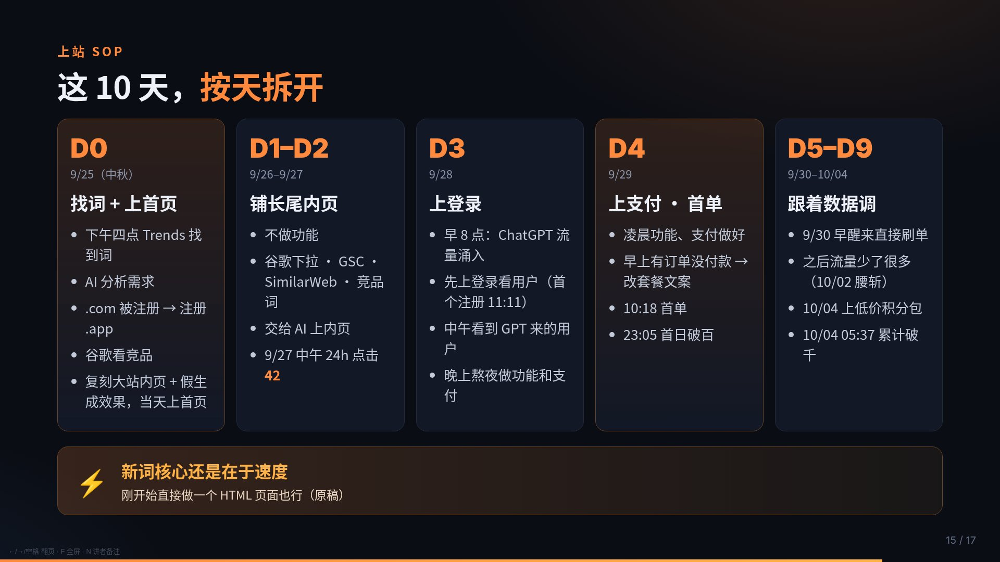
上站 SOP：D0 / D1–D2 / D3 / D4 / D5 往后
- D0 ：找到词当天就上首页。
- D1–D2 ：不做功能，先铺长尾内页。
- D3 ：看到流量，先上登录看是什么用户，晚上再做功能和支付。
- D4 ：上支付；有订单没付款，就改套餐文案。
- D5 往后 ：跟着数据调，流量下滑就补低价积分包。
判断一个新词值不值得马上做
- 在 Trends「搜索量上升」里出现
- 用 TrendsBar 对比 GPTs，热度追平或接近
- 谷歌结果页还没被专门站占住
- 域名还能买到（.com 没了就上 .app 这类贴词后缀）
长尾词从哪来
- 谷歌下拉框
- GSC 热门查询
- SimilarWeb 关键词生成器
- 竞品的自然流量关键词
我踩过、你可以避开的坑
- 生成完就结束：上线时就想好 Feed、分享，让用户留下、帮你放大。
- 埋点和支付一起上：不然转化率只能事后去数据库里查。
- 年付大单单独看：收到 EFW 预警就主动退款，保账号。
这次复盘的收获
- 速度就是一切。 梗站红利期大约一周，当天上站，没有功能也能拿到流量。新词的核心是速度，刚开始直接做一个 HTML 页面也行。
- 先内容，后功能。 文案和页面围绕用户会问的问题来写，AI 才会引用你；chatgpt.com 来的注册转化 11.2%，全站最高。有了速度，我们还要同时要注意自己的质量。
- 迭代跟着用户走。 用录屏、统计、客服看用户行为，再改产品。
- 小白靠模仿学习。 竞品的页面设计、文案、FAQ 写法、定价套餐先学过来，再根据数据去改。
- 开启Stripe雷达。 早点把相关的雷达规则打开，减少欺诈交易风险，尽量避免收到钱后又要退款的情况。
还有一句我最想说的：上词能不能出单，也看运气。我们能做的是大量上站尝试，把过程做好，机会来临之前做好准备，每一步都算数。对小白来说，以一个简单高频的方法切入，直接上手干，注重过程，而不是结果。
最后送大家四句话：
不要焦虑 · 注重过程 · 多多复盘 · 动手实操。
再次感谢哥飞老师，还有 droidHZ、小耳朵老师、刘小排几位前辈；也感谢我的对象 @西门聪明蛋，一直以来的支持和陪伴。
我是云何，一个在杭州做副业出海的开发者。谢谢你阅读到这里！